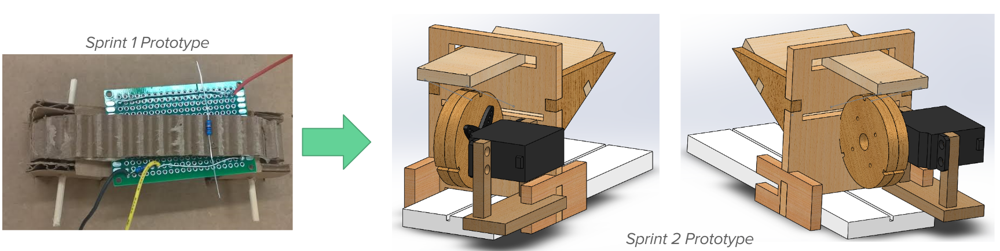
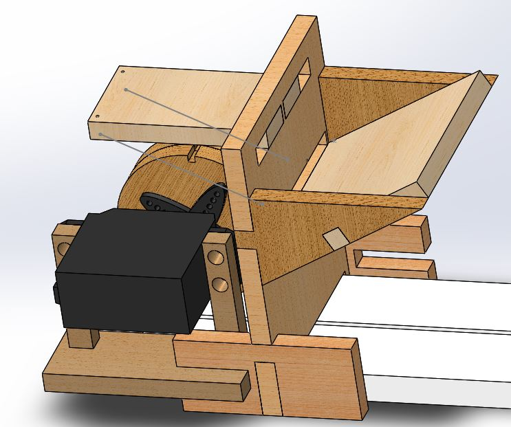
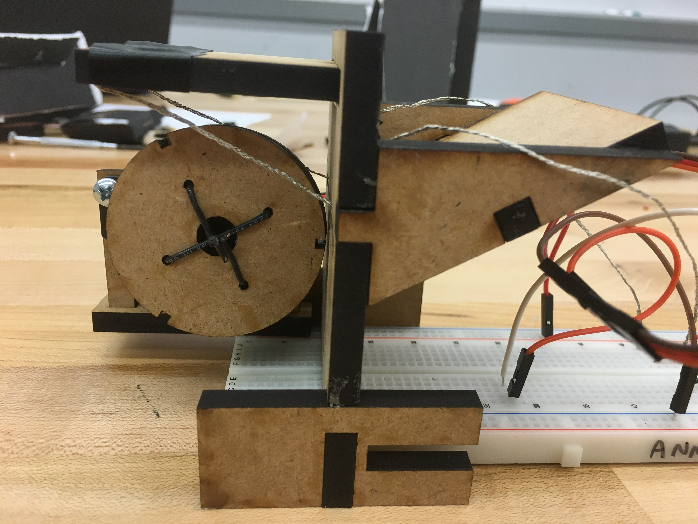
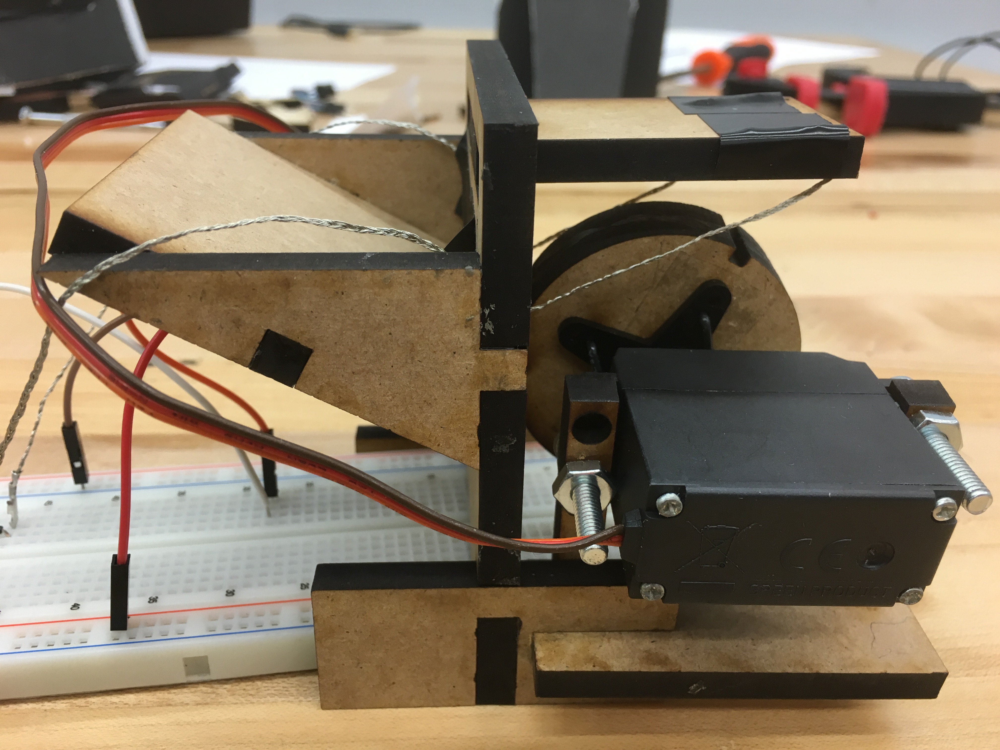
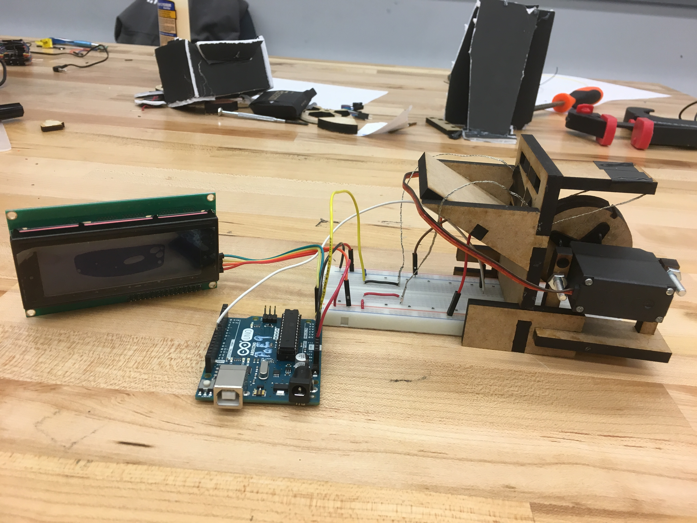

We learned a lot during our first sprint about the structure and working style of the team, and we were able to develop our idea for the project much further. Going into sprint two we have three main overarching focuses:
- Completing a thorough mechanical design and prototyping phase, and implementing a function mechanical system that introduces a resistor one at a time into the resistor measuring circuit.
- Integrating an LCD screen to output the resistance value measured by the circuit.
- Exploring options for building off the current voltage-divider circuit to be able to measure a large range of resistor values.
Mechanical
Over the course of this sprint, we dove into a design process where we ideated different designs for the mechanical system. In our first prototype, we were relying on gravity to make a secure connection in our circuit, which was not ideal. It left room for the resistors to sort of bounce around and “walk” out of place. This would have given us inconsistent results. To continue the original design, we would have had to create some kind of clamping mechanism to come down on our resistors at the right time, which would have added unnecessary motors and complexity to our system.
Realizing this, we decided to rethink our design. We wanted to create a system that would be able to make a secure connection between the resistors and the circuit without adding too many moving parts. We ultimately settled on our most recent design.
 Updated CAD model.   Constructed mechanical setup.Our model for this sprint was a leap. We went from a conveyor with resistor-sized notches to a wheel with resistor sized notches. We also integrated our first prototype of the resistor dispensing system. Our vision for this model is that gravity would roll the resistors down the ramp in the dispenser, they would fall into the crevice between the dispenser wall and the wheel, then get picked up when the wheel spun. The wheel would then push the resistors up against wires connected to the circuit as it spun, creating the solid connection that we needed. And it worked!
Well, it worked once every full wheel rotation if someone was pushing resistors down the ramp. This model showed us where the problems in our thinking and design were. When we first designed our resistor dispenser, we had our ramp ending in 1/4" of flat space since we laser cut our pieces and hadn't altered the straight edge.
To fix this, we are going to change around our dispenser design (update to be posted soon!). We also found that the resistors were coming into contact with our servo motor after they were measured, causing them to either bend or get flung randomly about. This showed us that we needed to keep this constraint in mind and keep it in mind as we switch over to our final stepper motor.
Computing
Our main computing task for this sprint was to implement the LCD screen so that, when the resistance of the unknown resistor is being meausured, it displays the resistance to the screen, which required integrating with the mechanical and electrical systems.
We used an I2C interface to connect the LCD to the Arduino. This is because if we connected the LCD directly to the Arduino, it would require the use of six pins rather than the two that I2C uses. To implement this we first started by connecting two of the I2C pins to their corresponding analog input pins in the Arduino, and connecting the other two pins to ground and power. We then uploaded an I2C addresss scanner to our Arduino which outputed the address for our display (each I2C interface display has its own built in address).
 Our lcd screen connected to the Arduino Uno with a simple I2C communication link.
Our lcd screen connected to the Arduino Uno with a simple I2C communication link.
Next, we downloaded the latest LiquidCrystal library in Arduino that allows an Arduino board to control Liquid Crystal displays (LCDs) based on the Hitachi HD44780 chipset. We used example code from this library to write our own code to control the output of the LCD. We programmed the screen to start with an output of "The Resistance," and change to "The resistance is: (# in Ohms)" when we wanted the circuit to be measuring a resistance.
 Our integrated setup for the LCD screen, mechanical system, and resistor measuring circuit.This step of the implementation required integrating the resistor measuring circuit and servo mechanical setup with the LCD screen. To do this we combined the circuitry and code from the resistor measuring circuit and servo into one final circuit and one Arduino file.
Electrical
Over the course of this sprint, we worked to build on a simple voltage divider circuit (from Sprint 1) that can measure voltage output, and therefore an unknown resistance, by incorporating digital potentiometers and relays. We noticed that a simple voltage divider measures less accurate values of resistance when the unknown resistance is different from the known resistor by orders of magnitude. To solve this problem, we designed a circuit as shown in the figure below, that uses digital potentiometers to vary the known resistance value until it is at the same order of magnitude with the unknown resistance. We use relays to make sure that at any given time only one of the potentiometers is connected to the voltage divider circuit. We use three digital potentiometers with maximum resistance values of 10 kOhms, 100 kOhms, and 1 MOhms and with precisions of …… Ohms, …., and …. respectively. This allows us to measure any resistances between 100 Ohms and 1 MOhms with reasonable accuracy. We use the first relay (labeled S1) to power (5V supply) or turn off (ground) the entire circuit. The other relays help channel the current to the desired digital potentiometer.
Goals For Next Sprint
- Improving accuracy of mechanical setup for testing resistance, particularly dispensing system
- Finish implementing upgraded circuit
- Further design of mechanical sorting system after resistance is outputted